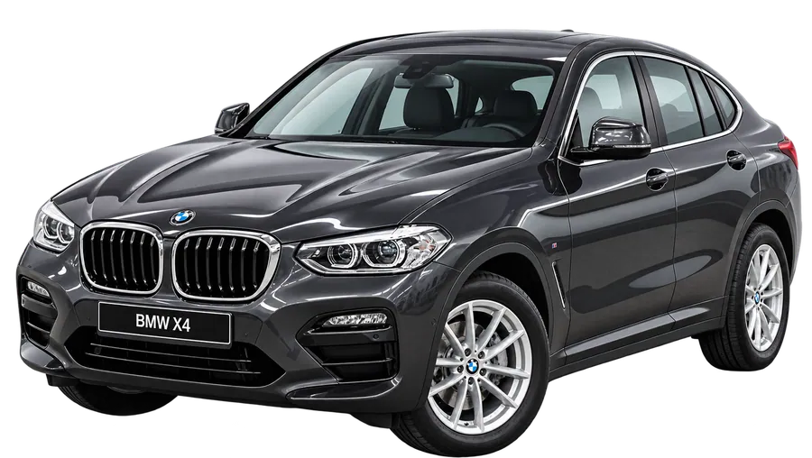

BMW
X4 (G02)
2018 – 2025Sports Activity Coupé
Premium mid-size crossover

Available coding functions depend on the vehicle equipment and software version. Tap any option to see details.
General
Auto Start/Stop memory / OFF
Remembers the last Auto Start/Stop setting or disables the function where supported. Requirements: Availability depends on the vehicle software version.
Sport Plus & Comfort Plus
Adds Sport Plus and/or Comfort Plus driving modes where supported.
Sport automatic transmission & Launch Control
Enables the factory sport transmission configuration and supported Launch Control function.
Default driving mode at startup
Changes the driving mode used when the vehicle starts from Comfort to another supported mode.
Disable seat-belt reminder
Disables selected acoustic and visual seat-belt reminders without changing restraint detection.
Disable horn when locking with engine running
Removes the short horn confirmation when the running vehicle is locked from outside.
One-touch window closing with door open
Allows automatic window closing to continue with a door open where supported.
Fog lights off with high beam
Switches fog lights off automatically when high beam is activated.
Rear position lights with DRL
Enables rear position lights together with daytime running lights.
Trunk closing without holding the button
Allows supported power tailgate closing from the remote or interior button without continuously holding it. Requirements: Requires power tailgate (option 316).
Reverse mirror dip angle
Adjusts the passenger-side mirror dip angle used while reversing. Requirements: Requires mirror package option 430 or 4T8.
Automatic steering-wheel & seat heating
Enables automatic heating based on configured outside-temperature conditions. Requirements: Requires heated steering wheel (248) and heated seats (494/4HA).
Automatic seat ventilation
Enables automatic seat ventilation based on configured outside-temperature conditions. Requirements: Requires active seat ventilation (453).
Ambient lighting color change
Changes supported factory ambient-lighting colors. Requirements: Requires lighting package (4UR).
BMW M logo on Display Key
Changes the supported Display Key logo to BMW M. Requirements: Requires Display Key (3DS) or auxiliary heating (536).
Next speed-limit prediction
Displays the upcoming speed limit using navigation-map data. Requirements: Requires 5AS, 5DF or 5AU; current navigation maps are recommended.
Automatic Speed Limit Assist (aSLA)
Allows compatible cruise control to adapt the set speed to detected speed limits. Requirements: Requires 5DF or 5AU.
Lane Change Assistant
Enables supported assisted lane changes under the required driving conditions. Requirements: Requires Driving Assistant Professional (5AU).
Engine sound control menu
Adds a supported menu for adjusting engine/exhaust sound independently of driving mode. Requirements: Requires compatible exhaust/sound hardware and MGU.
IconicSounds Sport
Activates or changes supported synthesized engine sound in the cabin. Requirements: Availability depends on vehicle hardware and software.
Alpina adaptive suspension software
Applies a compatible Alpina calibration to the adaptive suspension. Requirements: Requires Adaptive M Suspension (2VF).
Welcome-light animation change
Changes the supported welcome-light animation.
Oil service interval adjustment
Adjusts the base oil-service interval where supported.
Remote engine start
Enables supported remote start functions for compatible petrol vehicles. Requirements: Requires a compatible factory petrol-engine configuration.
Instrument Cluster
BMW M logo
Adds the supported BMW M logo to the instrument cluster.
Faster digital speedometer refresh
Reduces the supported digital speed display refresh interval for quicker updates.
BMW M Performance interface
Enables the supported M Performance instrument-cluster interface. Requirements: Requires BMW Live Cockpit Professional (6U3).
BMW M interface
Enables the supported BMW M-style instrument-cluster interface. Requirements: Requires BMW Live Cockpit Professional (6U3).
Alpina interface
Enables the supported Alpina-style instrument-cluster interface. Requirements: Requires BMW Live Cockpit Professional (6U3).
Assisted Driving View
Displays supported lane and surrounding-vehicle information in the instrument cluster. Requirements: Requires Driving Assistant Professional (5AU).
Multimedia & iDrive
BMW M startup screen
Changes the supported multimedia startup screen to the BMW M logo.
Video in Motion
Allows supported USB video and Screen Mirroring video to remain available while moving. Use only where lawful and without distracting the driver. Requirements: Requires BMW Live Cockpit Professional (6U3).
DRL on/off option in iDrive
Adds the supported daytime-running-light on/off setting to the lighting menu.
Five-flash turn signal option
Adds a five-flash setting for the one-touch turn signal.
Acoustic lock/unlock confirmation
Adds the supported audible lock/unlock setting. Requirements: Requires factory alarm (302).
Tyre temperature display
Adds tyre-temperature information where supported. Requirements: Requires tyre-pressure monitoring (2VB).
Rear camera trailer-hitch zoom
Adds the supported rear-camera zoom function. Requirements: Requires rear camera (3AG) or Parking Assistant (5DM).
CarPlay & Android Auto connection stability
Adjusts supported wireless settings to improve connection stability in high-interference environments. Requirements: Requires Apple CarPlay and/or Android Auto.
Apple CarPlay activation
Activates Apple CarPlay on compatible factory BMW multimedia hardware. Requirements: Requires WLAN antenna for best performance.
BMW Drive Recorder
Activates supported 360-degree drive recording functionality. Requirements: Requires surround-view cameras.
X4M F98 interface
Changes supported multimedia graphics to an X4M F98 / BMW M-style interface. Requirements: A software update may be required depending on the vehicle.
Offline driver profiles
Creates supported local driver profiles when online profile services are unavailable.
Send us your VIN and we will confirm which functions are available for your car.
GET A QUOTE →